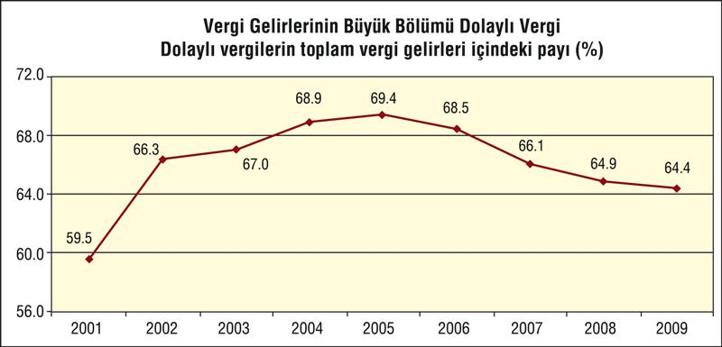
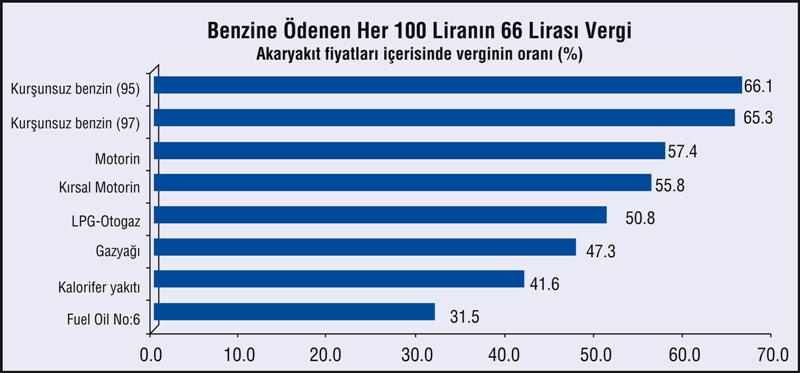
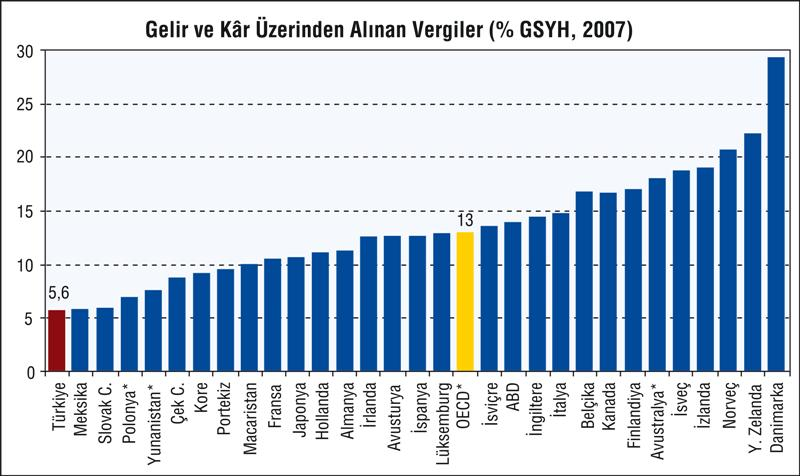

Krizde, bütçe açığının daha çok büyümemesi için İşsizlik Fonu kaynakları kullanılırken, yeni dolaylı vergilerle tüketicilerin vergi yükü de ağırlaştırıldı.
11 Ağustos 2009 tarihli ve 5921 sayılı Kanunla değiştirilen 4447 sayılı Kanunun geçici 6'ncı maddesiyle, İşsizlik Sigortası Fonu nema gelirlerinden GAP Eylem Planı ile diğer ekonomik kalkınma ve sosyal gelişmeye yönelik yatırımlarda kullanılmak üzere yapılacak aktarma tutarlarının hesabında kullanılacak oran, 2009 ve 2010 yılları için 1/4'ten 3/4'e yükseltildi.
5763 sayılı Kanunla İşsizlik Sigortası Fonunun faiz gelirinin yüzde 25'inin 2009-2012 döneminde öncelikli olarak Güneydoğu Anadolu Projesi kapsamındaki yatırımlarda kullanılmak üzere merkezi yönetim bütçesine aktarılması hükme bağlanmıştı. 18 Ağustos 2009 tarihli Resmi Gazetede yayımlanan 5921 sayılı Kanunla 2009-2010 yıllarına münhasır olmak üzere yüzde 25 olan transfer oranı yüzde 75'e yükseltildi. Bu kapsamda, Fon'dan 2009 yılında 4 milyar TL merkezi yönetim bütçesine aktarıldı.
Sigara ve akaryakıt üzerindeki ÖTV'den ise 3,6 milyar TL artış sağlandı. Toplam vergi tahsilatı içerisinde dolaylı vergilerin 2007 yılında yüzde 66,1, 2008 yılında yüzde 64, 9 olan payı, 2009 yılında yüzde 64,3 olarak gerçekleşti.
Toplam gelirlerin merkezi yönetim bütçesi hedefinin altında kalması, toplam harcamaların ise başlangıç ödeneğinin üzerine çıkması sonucunda 2009 yılı bütçesinde 10,4 milyar TL olarak hedeflenen bütçe açığı, 52,2 milyar TL olarak gerçekleşti.
Türkiye'de, vergi yükü, alt-orta sınıfın yükü ağırlaştırılarak, hızla artıyor. Kayıt dışını azaltamayan ve vergi tabanını genişletemeyen hükümet, çareyi dolaylı vergileri artırmakta buldu. Deprem gibi olağan üstü koşullar nedeniyle getirilen özel iletişim, özel işlem, şans oyunları ve benzeri birçok dolaylı vergi kalıcı hale getirildi.

Gelirle ilişkisi olmadığı için, en zenginle en yoksulun aynı oranda ödediği dolaylı vergilerin toplam vergi gelirleri içerisindeki payı yüzde 64 düzeyinde bulunuyor.
Vergi sistemi dolaylı vergilere dayandığı için ekonomik durgunluk döneminde vergi gelirlerinde yüksek oranlı gerilemeler yaşanıyor.
Kayıt dışı ekonomiyle baş edemeyen ve vergi kayıp ve kaçağının önüne geçemeyen devlet çözümü, akaryakıt, otomobil ve benzeri ürünler üzerindeki vergileri yüksek düzeylerde tutmakta buluyor.
En önemli vergi kalemlerinden birini akaryakıt oluşturuyor. 2009 yılı sonu itibariyle Türkiye'de kurşunsuz benzin (95 oktan) için ödenen her 100 liranın 66,1 lirası özel tüketim vergisi ve KDV adı altında devlete gidiyor.

Motorin fiyatında verginin payı yüzde 57, 4, kırsal motorinde yüzde 55, 8 düzeyinde bulunuyor. LPG-Oto gaz fiyatı içerisinde verginin payı yüzde 50, 8, gazyağında yüzde 47, 3, kalorifer yakıtında yüzde 41, 6, fuel-oil (no:6) yüzde 31, 5 olarak hesaplanıyor.
| Bazı mal ve hizmetlerin fiyatları içerisinde verginin oranı (%) | |
| 1400-1600 motor otomobil | 38, 3 |
| 2000 motor otomobil | 47, 3 |
| Telefon faturası (47 TL) | 31, 0 |
| Sigara | 78, 3 |
| Alkollü İçki (Rakı) | 57, 0 |
| Kurşunsuz benzin | 66, 1 |
Kayıt dışı ekonomiyle baş edemeyen ve vergi kayıp ve kaçağının önüne geçemeyen devlet çözümü, akaryakıt, otomobil ve benzeri ürünler üzerindeki vergileri yüksek düzeylerde tutmakta buluyor.
Türkiye'de satılan 1400-1600 cc motor bir otomobil için ödenen paranın yüzde 38,3'ü, 2000 motor bir araba için ödenen paranın yüzde 47, 3'ü, telefon faturasının yüzde 31'i, sigara bedelinin yüzde 78, 3'ü, alkollü içkiler için ödenen paranın yüzde 57'si KDV ve ÖTV, ÖİV gibi vergilerden oluşuyor.
Dolaylı vergi ile çoğu alt-orta sınıflardan oluşan tüketiciye yıkılan vergi yükü, gelir ve kâr üzerinden yeterli vergi alınmaması sonucu büyük bir adaletsizliği her yıl yeniden üretiyor. Gelir ve kâr üzerinden alnan vergiler, Türkiye'de ancak yüzde 5,6 gibi komik bir büyüklükte kalırken OECD ortalaması yüzde 13'ü; daha adil vergi dağılımına sahip İskandinav ülkelerinde yüzde 30'u buluyor.

Ücretlinin vergi yükü, prim yükü ile birlikte yüzde 50'lere yaklaşıyor. Örneğin, 2010'da 577 TL olan net asgari ücret için işçi tarafından 152 TL prim ve vergi adı altında kesinti yapılırken, 156 TL de işveren tarafından SSK primi ve işsizlik sigortası primi alınıyor. Yani her asgari ücretli istihdamı için 577 TL işçiye giderken 308 TL de devlete ödeniyor, dolayısıyla bir asgari ücretli istihdamının maliyeti de 885 TL'ye çıkıyor.
Türkiye İşveren Sendikaları Konfederasyonu, TİSK'e üye işverenler, sendikalı, toplu sözleşme yetkisi olan işyerlerinin istatistiklerini derleyerek işgücü maliyeti çıkarıyorlar. 13 milyon ücretlisi olan Türkiye'de toplu sözleşme nimetinden yararlanan sadece 400-450 bin.. Yani 25'te 1 bile değil...
Yine de ücretten yapılan amansız kesintileri görmek, işverenlerin neden bu kadar kaçağa yöneldikleri, eksik beyanda bulunup prim ve vergi kaçırdıklarını anlamak, verginin yükünün neden ve nasıl istihdama yansıtıldığını görmek için bu veri tabanını mercek altında tutmak faydalı.
Görünen şu: Genelde, toplu sözleşme lüksüne sahip 400 bin dolayındaki işçinin ayda brüt ücreti 2.787 TL, ama SGK primi ve vergiye işçiden 845 TL gidince elde 1.942 TL kalıyor. İşveren de SGK primi ve diğer yükümlülükleri ile ortalama işçi başına devlete 721 TL ödüyor. Böylece, işçi ve işverenden devlete prim ve vergi olarak giden 1.566 TL'yi buluyor. Yani yapılan işgücü ödemesinin 45'i devlete, 55'i işçiye kalıyor.
| ÜCRETİN BRÜTÜ VE NETİ, 2009 | |||||||||
| İşkolu | Kesinti Öncesi Ücret (TL) |
İşçinin ElineE Geçen (TL) |
İşçiden Vergi ve Prim |
İşverenden Kesintiler |
Toplam Kesinti (TL) |
Kesinti / Ücret |
İşgücü maliyeti (TL) |
Ücret Ligi |
|
| 1. | İLAÇ | 3.998 | 2.642 | 1.356 | 839 | 2.195 | 45 | 4.837 | 100 |
| 2. | BELEDİYE | 3.712 | 2.502 | 1.210 | 878 | 2.088 | 45 | 4.590 | 94, 9 |
| 3. | CAM | 3.315 | 2.424 | 891 | 1.006 | 1.897 | 44 | 4.321 | 89, 3 |
| 4. | KİMYA | 3.519 | 2.281 | 1.238 | 823 | 2.061 | 47 | 4.342 | 89, 8 |
| 5. | ŞEKER | 3.057 | 2.165 | 892 | 603 | 1.495 | 41 | 3.660 | 75, 7 |
| 6. | KAMU-SAN. | 3.084 | 2.158 | 926 | 835 | 1.761 | 45 | 3.919 | 81 |
| 7. | KAMU-İŞ | 3.080 | 2.079 | 1.001 | 847 | 1.848 | 47 | 3.927 | 81, 2 |
| ORTALAMA | 2.787 | 1.942 | 845 | 721 | 1.566 | 45 | 3.508 | 72, 5 | |
| 8. | KAĞIT | 2.713 | 1.910 | 803 | 581 | 1.384 | 42 | 3.294 | 68, 1 |
| 9. | TURİZM | 2.122 | 1.610 | 512 | 688 | 1.200 | 43 | 2.810 | 58, 1 |
| 10. | METAL | 2.072 | 1.535 | 537 | 416 | 953 | 38 | 2.488 | 51, 4 |
| 11. | ÇİMENTO | 2.004 | 1.454 | 550 | 664 | 1.214 | 46 | 2.668 | 55, 2 |
| 12. | DERİ | 2.013 | 1.436 | 577 | 381 | 958 | 40 | 2.394 | 49, 5 |
| 13. | GIDA | 1.920 | 1.346 | 574 | 675 | 1.249 | 48 | 2.595 | 53, 6 |
| 14. | YEREL. Yön. | 1.688 | 1.278 | 410 | 543 | 953 | 43 | 2.231 | 46, 1 |
| 15. | TOPRAK | 1.720 | 1.262 | 458 | 587 | 1.045 | 45 | 2.307 | 47, 7 |
| 16. | AĞAÇ | 1.576 | 1.132 | 444 | 428 | 872 | 44 | 2.004 | 41, 4 |
| 17. | İNŞAAT | 1.580 | 1.104 | 476 | 395 | 871 | 44 | 1.975 | 40, 8 |
| 18. | TEKSTİL | 1.446 | 1.089 | 357 | 273 | 630 | 37 | 1.719 | 35, 5 |